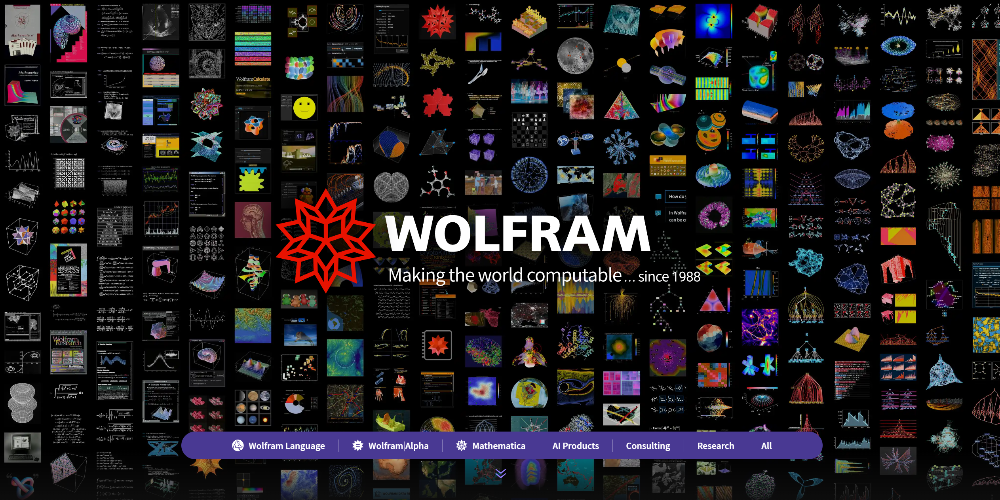
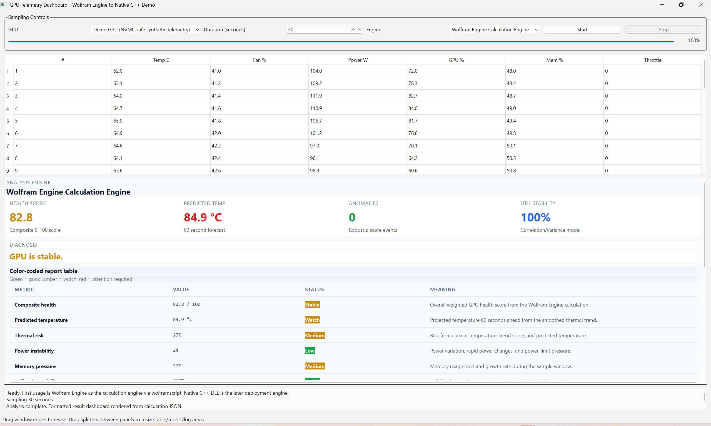

Wolfram Engine GPU Telemetry Demo
A native C++/Qt dashboard that uses Wolfram Engine locally as the calculation engine for GPU telemetry health analysis.

From download to local calculation
powershell -ExecutionPolicy Bypass -File .\install.ps1 creates local install and shortcuts.wolframscript, and displayed as a color-coded report.Wolfram Engine is the calculation runtime
What it is
- A local Wolfram Language kernel/runtime.
- Runs calculations through
wolframscript. - Good for automation, embedded workflows and local compute.
- Separate from the Mathematica notebook front end.
Why it matters here
- Customer can license and run the calculation locally.
- No cloud dependency for the health analysis.
- The algorithm remains readable Wolfram Language.
- Advanced mathematics stays in a runtime designed for mathematics.
Positioning in the Wolfram product family
Useful customer links
Wolfram describes a unified computation vision across research, education, development, AI deployment and more.
Wolfram home
Wolfram Engine commercial options
Wolfram Language
Wolfram|Alpha
Mathematica
AI Products
Consulting
Global Sales — Israel
ESL: local enablement and integration partner
Role in the customer journey
- Explain the Wolfram Engine deployment model to Israeli customers.
- Guide installation, activation and local validation.
- Package engineering demos into customer-consumable releases.
- Bridge Wolfram algorithms into C++/Qt systems and customer workflows without replacing Wolfram's math engine.
- Support customer teams as formulas, scoring rules and diagnostics evolve.
This aligns with the customer-facing flow linked from Wolfram global sales for Israel: Wolfram Global Sales Directory.
What is shipped to the customer?
WolframEngineGpuTelemetryDemo-0.1.2-win64/ ├─ GpuTelemetryDashboard.exe ├─ Qt6Core.dll / Qt6Gui.dll / Qt6Widgets.dll ├─ platforms/qwindows.dll ├─ notebooks/ │ ├─ GpuHealthReference.wl │ ├─ GpuHealthPackageExample.m │ ├─ GpuHealthReferenceRunner.wls │ └─ GpuHealthReference.nb ├─ install.ps1 ├─ uninstall.ps1 ├─ CUSTOMER_INSTALL_GUIDE.md ├─ README_RUNTIME.txt └─ LICENSE
Deliberately not included
Wolfram Engine is not bundled. The customer installs and activates it separately under their own Wolfram license.
If this returns a Wolfram version string, the dashboard can call the local calculation engine.
Customer installation flow
╭──────────────────────╮
│ GitHub Release ZIP │
╰──────────┬───────────╯
▼
╭──────────────────────╮ ╭────────────────────────────╮
│ Extract package │──────▶│ CUSTOMER_INSTALL_GUIDE.md │
╰──────────┬───────────╯ ╰────────────────────────────╯
▼
╭──────────────────────╮
│ install.ps1 │
│ copies app locally │
│ creates shortcuts │
╰──────────┬───────────╯
▼
╭──────────────────────╮ ╭────────────────────────────╮
│ Customer verifies │──────▶│ wolframscript -code │
│ Wolfram Engine │ │ '$Version' │
╰──────────┬───────────╯ ╰────────────────────────────╯
▼
╭──────────────────────╮
│ Launch Dashboard │
╰──────────────────────╯
How the dashboard uses Wolfram Engine
╭──────────────╮
│ Qt Dashboard │
╰──────┬───────╯
│ collects samples every second
▼
╭─────────────────────────╮
│ Telemetry JSON temp file │
╰──────┬──────────────────╯
│ hidden CreateProcess
▼
╭─────────────────────────╮
│ wolframscript.exe │
│ GpuHealthReferenceRunner│
╰──────┬──────────────────╯
│ loads .wl calculation source
│ optional .m package example
▼
╭─────────────────────────╮
│ Wolfram Engine │
│ calculate health report │
╰──────┬──────────────────╯
│ writes output JSON
▼
╭─────────────────────────╮
│ Qt color-coded report │
╰─────────────────────────╯
Qt dashboard components

Notebook, .wl, .m and .wls — what each file does
.nb
GpuHealthReference.nb
Human-facing notebook wrapper: explanation, presentation, exploration. Not the automated runtime target.
.wl
GpuHealthReference.wl
The reusable Wolfram Language calculation source: smoothing, regression, correlations, anomaly detection and scoring.
.m
GpuHealthPackageExample.m
Traditional Wolfram package file: reusable API layer with exported functions, usage messages, contexts and symbolic examples. View source.
.wls
GpuHealthReferenceRunner.wls
Command-line runner: imports telemetry JSON, loads Wolfram source, exports analysis JSON.
For customer automation, we do not run the notebook UI. We run the Wolfram Engine kernel through wolframscript.
Why include a .m package example?
Why .m is useful
- Package boundary: groups reusable functions under a context such as
GpuHealthExample`. - Public API: exported functions have usage messages, which helps customer teams understand what is supported.
- Symbolic helpers: good place for model explanation utilities like sensitivity derivatives and threshold solving.
- Stable reuse: notebooks, scripts and other Wolfram code can load the same package with
Get["file.m"].
Decision guide
- .nb — use for human exploration, teaching, screenshots and algorithm explanation.
- .wl — use for plain Wolfram Language source: calculation logic that can be loaded by scripts.
- .m — use when the code should behave like a package/library with named public functions.
- .wls — use for command-line automation: parse arguments, call the engine, write output files.
In this demo, .wl holds the runtime health calculation, .wls is the executable runner, and .m demonstrates how a customer-facing math API can expose symbolic explanations without rewriting the model in C++.
What we calculate
Inputs sampled by the dashboard
- Temperature, fan, power, power limit
- GPU utilization and memory utilization
- Total/used memory and clock values
- Throttle reason flags
- Timestamps for trend estimation
Outputs from Wolfram Engine
- Composite health score, 0–100
- Thermal risk and 60-second temperature forecast
- Power instability and memory pressure
- Utilization stability
- Anomaly count and human diagnosis
Inside the Wolfram calculation
╭──────────────╮
│ JSON samples │
╰──────┬───────╯
▼
╭──────────────────────╮
│ Sort + fill defaults │
╰──────┬───────────────╯
▼
╭──────────────────────╮
│ Exponential smoothing│ α = 0.35
╰──────┬───────────────╯
▼
╭──────────────────────╮
│ Linear thermal trend │ temperature slope
╰──────┬───────────────╯
▼
╭──────────────────────╮
│ Risk components │ thermal / power / memory / anomaly / throttle
╰──────┬───────────────╯
▼
╭──────────────────────╮
│ Composite score │ weighted 0–100 health
╰──────┬───────────────╯
▼
╭──────────────────────╮
│ Diagnosis + JSON │ rendered by Qt report table
╰──────────────────────╯
Key scoring concepts
Smoothing and forecast
Wolfram Engine estimates the thermal trend from smoothed temperature values over time.
Composite health
The score is clamped to 0–100 and translated into a readable diagnosis.
What the demo checks and displays
Why use Wolfram Engine instead of a C++ DLL/lib?
C++ is strong at product integration
- Native UI, hardware APIs, drivers and operating-system integration.
- Predictable deployment and performance-critical implementation.
- But advanced math often becomes custom code, third-party libraries and long validation cycles.
Wolfram Engine is a math engine
- Symbolic algebra, calculus, equation solving and optimization.
- Statistics, time-series analysis, fitting, transforms and anomaly exploration.
- Rapid formula iteration: change the model, rerun, inspect results, then ship locally.
The demo keeps C++ focused on the dashboard/product shell and keeps mathematical reasoning in Wolfram Engine, where symbolic and high-level numeric capabilities already exist.
Examples that are natural in Wolfram Engine
Symbolic model work
Useful when engineers want to derive sensitivities, solve threshold equations, or explain formulas — not only execute fixed numeric code.
High-level analytics
Wolfram Language lets the demo grow from simple scoring to richer diagnostics without rebuilding a math stack inside C++.
How we prove the release works
Engine check
Confirms the customer's Wolfram Engine is installed, licensed and accessible.
Wolfram path
Runs built-in samples through Wolfram Engine and validates analysis JSON.
--self-test remains available as a short alias for the same Wolfram Engine validation path.
The demo message
For the customer
- Install Wolfram Engine locally.
- Run an engineering dashboard.
- See Wolfram calculations inside a customer-style product UI.
- Validate everything with packaged self-tests.
For ESL and Wolfram
- Demonstrate a practical licensing and install path.
- Show how Wolfram Engine embeds into C++ workflows.
- Explain why a math engine is stronger than reimplementing advanced math in a C++ DLL.
- Provide an MIT public demo customers can inspect and extend.